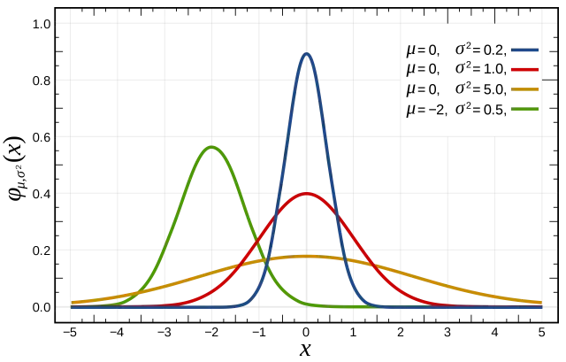
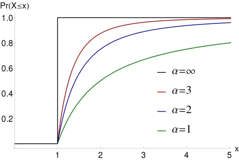

, 13 min read
Price's Law
Original post is here eklausmeier.goip.de/blog/2023/01-29-price-s-law.
- Google Parent Alphabet to Cut 12,000 Jobs
- Facebook parent company Meta sheds 11,000 jobs in latest sign of tech slowdown
- Elon Musk says Twitter is done with layoffs and ready to hire again; from 7,500-person workforce to 2,700 people
- Microsoft is laying off 10,000 employees
- Amazon set to begin new round of layoffs affecting more than 18,000 people
- IBM Cuts Thousands of Employees in Latest Tech Layoffs
- SAP to Cut 3,000 Jobs After Profit Plunges
If all those people are laid off, how can these companies still produce meaningful goods and services? Or phrased differently: What have all these people done before? Those who have worked in larger corporations, governments, or bureaucracies, know that the fiercest enemy in a company is not the end-consumer but rivaling departments. Also, those who got fired might have got good recommendations from coworkers and supervisors, or were even specialists in their field.
One explanation to this phenomena can be attributed to Price's law: "The square root of the number of people in a productive domain produce half the output." This is called Price's law. The original paper is here. This phenomen also popped up in What Makes a Good Programming Environment?, where we stated on the topic programming productivity:
Coding times vary 1:25, execution speed varies 1:10 (and higher).
1. Jordan Peterson lecture. This principle is nicely explained in belows lecture from Jordan Peterson.
Below is a commented partial transcript from above video.
On amount of variablity in performance:
... about performance prediction and one of them is to what degree do people vary in terms of their performance capacity, and you might say:
- there's very little performance variability, or you might say
- there's a tremendous amount of performance variability, or you might say
- there's an absurd amount of performance variability
And it turns out that the claim, that there's an absurd amount of performance variability is the proper claim.
On distribution of performance, first mentioning of Derek de Solla Price:
IQ is normally distributed, so is conscientiousness. But productivity is distributed along the Pareto distribution and I'll show you why. That follows a law called Price's law. From someone named Derek de Solla Price, who was studying scientific productivity in the early 1960s and what he showed was that a vanishingly small proportion of the scientists operating in a given scientific domain produced half the output.
On the rarity at the top:
What's happening is, that to do really well at a given productive task, which would also include generating money as a proxy for creative productivity, is that you have to be a bunch of things simultaneously:
- You have to be really, really smart.
- You have to be really, really lucky.
- You have to be really healthy.
- You have to be really energetic.
- You have to be really conscientious.
- You have to be in the right time at the right place and maybe
- You also have to have the right social network.
So it's a lot of things and each of those are small probability they're each of. Those are small probabilities and then if you multiply the small probabilities together, you get an extraordinarily tiny probability. You have to have all those things functioning before you're going to end out on the extreme end of the productivity-distribution. But if you do end up there, then you produce almost all of everything.
Finally, the statement of Price's law:
So it's a tiny number of people that produce almost all of everything. That's Price's law. Technically it is the square root law. The square root of the number of people in a productive domain produce half the output. If you have ten employees, three of them produce half the output. If you have a hundred, ten of them produce half the output. If you have 10,000, a hundred of them produce half the productive output. What that also means is, that there's massive variability in performance.
On the application domain:
There's so much difference in productivity and that actually happens to be also a function of the complexity of the job. If the job is simple, e.g., it is a janitorial job, it takes a little while to learn it. But once you've learned that, you basically do the same thing all the time. There's not a lot of performance variability in those jobs, and most of that would be eaten up by conscientiousness and also to some degree by neuroticism, because the higher people, who are higher neuroticism, would be more likely to miss work.
On initial learning a task and predictability of performance on easier tasks and complex tasks:
General cognitive ability, for example, is not a good predictor at all. It'll predict how fast you learn in the tasks initially, but not how well you perform the tasks. But if the tasks you're doing are shifting constantly, so your responsibilities change, or you're in a creative job, where you're constantly solving new problems, then IQ, as the complexity of the job increases, the predictive utility of IQ increases, which is only to say, that smarter people can handle complex situations faster. That doesn't seem like a particularly radical claim.
Summarizing, implications, historic context:
So Price's law dictates that there's massive individual productivity differences between people. Your capacity for predicting performance, even by small increments, has a huge economic consequence. That was established in the 1990s. The equations were first developed in the 1990s.
The math behind it:
A normal distribution looks like this:

It emerges as a consequence of chance.
Here's a Pareto-distribution. I showed you the creative achievement questionnaire that almost everybody stacked up at. Zero people have zero creative output. The median person has zero lifetime creative output. Then there's a tiny proportion that are way the hell out on the right hand end of the distribution.
The corresponding cumulative distribution function looks like this:

In the lecture of Jordan Peterson, below animations, from Justin Chen, are used by : Computer Animation of Money Exchange Models
Statistical Mechanics of Money
The computer simulation for trading between people having equal starting amount of capital:
Everybody starts out with ten dollars. There's a thousand people. Playing the game everybody starts out with ten dollars. I have a dollar, you have a dollar. I flip a coin. If I get heads, you give me a dollar. If I get tails, I give you a dollar. We go around and we trade with everyone. So the first thing, that happens when people start to trade, is this normal distribution. It develops because some people lose and some people win. It's just like the golden board that I showed. So you keep playing. People start to stack up at zero. Because they lose ten times in a row, bang, they're done. The bottom graph is a graph of the entropy of the distribution which increases as the game continues. Because at the beginning, it's maximally ordered. Everybody has exactly the same amount. Now it's being distributed. Same equations apply to the distribution of gas in a vacuum. You keep playing it. Eventually, if you play it right to its conclusion, is that one person ends up with all the money.
Reference to Matthew's bible phrase / Matthew effect:
That's to those, who have everything, more will be given. From those, who have nothing, everything will be taken. That's the law of economic productivity. It's called Matthew principle. It's actually an economic principle, that was derived from a saying in the New Testament.
Social implications of Pareto distribution:
I've been thinking more about this Pareto distribution issue, because it's really big deal. It's still difficult for me to understand. I didn't really learn about this till about ten years ago. Which is quite a shock to me, because it's such a fundamental phenomena, that it seems to me that it would have been addressed in my training somewhere along.
Disparity of statistical distributions of ability and outcome:
You know that IQ is normally distributed and it's a good predictor of long-term performance. And conscientiousness is normally distributed and it's a good predictor of long-term performance. And openness is also normally distributed and it's a good predictor of creative behavior. But, creative output is not normally distributed. It is distributed in this weird Pareto distribution. Looks like the capacity to think creatively, might be normally distributed. That would be openness say and intelligence, but the consequence of that turns into this strange Pareto distribution.
On the speciality of the zero value in this game:
If he price sinks to zero, you're done. That's it. The game is over. That's the thing about zero. When you hit zero, or maybe when you're at zero, the game is over and so there's these weird barriers to moving forward in life. And you see there's a poverty trap. That's sort of like this: if you're so broke, that you can't keep up with paying your bills, it's really, really difficult to get out of that, because you can't get a bank account, for example, and you can't pay your rent.
Comparing with the Monopoly game:
You can think about this as a Monopoly game. Everybody starts with the same amount of money and then you start trading randomly and if you have \$10 and you're trading \$1 each trade. If you have enough people, some unlucky person is going to end up with zero dollars after ten trades. If they end up with \$1 after nine trades, they still have a chance of recovery. It's a low chance, but it's not zero. But once they hit zero, they're out of the game. What happens is, if you run this simulation, you have people flip a coin to determine how they're going to trade. First thing that happens is you generate a normal distribution, because some people win, and some people lose and most people sort of half win and half lose. But some lose continually and some win continually. It turns into a normal distribution. But then when the game continues to play then what happens is, that people start to stack up on 0 end of things, and a tiny proportion at the upper end. If you play the game right to cessation, which is what you do if you play Monopoly, for example, somebody ends up with all the money. The funny thing about playing Monopoly, if you've played Monopoly multiple times, is that the probability that you'll win continually across games is pretty low. There's a lot of randomness in Monopoly, and if you play with the same 5 people 10 games, the probability is pretty good you're not going to win more than two games. So there's chance-element that comes into play that determines the outcome.
On skewed distribution at zero:
I've always had the suspicion that what happens to people is that as they move toward zero. The feedback loops get set up, so they're more likely to hit zero, and as they move away from zero, positive feedback loops get set up so that they're increasingly ...
2. The formulas. From Wikipedia: Consider a directed graph with $n$ nodes. Let $p_k$ denote the fraction of nodes with degree $k$, so that
After some computations and using Stirling's approximation
gives an approximation of the Beta function for large $x$ and fixed $y$, see Beta function:
we get
For reference: Pareto distribution
Cumulative distribution function
Probability density function
3. Computer simulation. The Peterson lecture shows below simulation results.
My own simulation code is here.
/* Pareto distribution after successive trading
There are `people` many traders, each having initially `capital` of capital.
Each person trades with each other for $1 as long as they still have non-zero capital.
This repeats for `iterations` times.
Elmar Klausmeier, 25-Jan-2023
*/
#include <stdio.h>
#include <stdlib.h>
#include <unistd.h>
#define PEOPLEMAX 20000
int flip(void) { // flip coin: head or tail
return random() & 0x01;
}
int main(int argc, char *argv[]) {
int c, i, j, k, found, temp;
int capital=10, iterations=10, people=10, seed=1;
int p[PEOPLEMAX], histx[PEOPLEMAX], histy[PEOPLEMAX];
while ((c = getopt(argc,argv,"c:i:p:s:")) != -1) {
switch(c) {
case 'c':
capital = atoi(optarg);
break;
case 'i':
iterations = atoi(optarg);
break;
case 'p':
people = atoi(optarg);
break;
case 's':
seed = atoi(optarg);
break;
default:
printf("%s: illegal option %c\n",argv[0],c);
return 1;
}
}
srandom(seed);
printf("capital=%d, iterations=%d, people=%d, seed=%d\n",capital,iterations,people,seed);
if (people > PEOPLEMAX) {
printf("Too many people, max is %d\n",PEOPLEMAX);
return 2;
}
// Initially, everyone has the same starting capital
for (j=0; j<people; ++j) {
p[j] = capital;
histx[j] = -1;
histy[j] = 0;
}
// The simulation part
for (i=0; i<iterations; ++i) {
for (j=0; j<people; ++j) {
for (k=0; k<people; ++k) {
if (k == j) continue;
if (p[j] <= 0) break; // ran out of money
if (p[k] <= 0) continue; // cannot trade: no money
if (flip()) {
p[j] += 1, p[k] -= 1;
} else {
p[j] -= 1, p[k] += 1;
}
}
}
}
// Print results
for (j=0; j<people; ++j) {
printf(" %d",p[j]);
}
printf("\n");
// Compute histogram: histy[i] tells you how many times histx[i] occured
histx[0] = p[0], histy[0] = 1;
for (j=1; j<people; ++j) {
found = 0;
for (k=0; k<j; ++k) {
if (histx[k] == p[j]) { // look at all previous records
histy[k] += 1;
found = 1;
break;
}
}
if (found == 0) {
histx[j] = p[j], histy[j] = 1;
}
}
// Shell's sort according K&R, The C Programming Language, p.62
for (i=people/2; i>0; i /= 2) {
for (j=i; j<people; ++j) {
for (k=j-i; k>=0 && histx[k]>histx[k+i]; k-=i) {
temp = histx[k]; // swap histx[] + histy[]
histx[k] = histx[k+i];
histx[k+i] = temp;
temp = histy[k];
histy[k] = histy[k+i];
histy[k+i] = temp;
}
}
}
// Print non-negative entries
for (j=0; j<people; ++j) {
if (histx[j] >= 0)
printf("\t%d\t%d\t%d\n",j,histx[j],histy[j]);
}
return 0;
}
Running the program produces output like this:
$ pareto1
capital=10, iterations=10, people=10, seed=1
0 26 20 18 14 0 0 7 0 15
3 0 4
4 7 1
5 14 1
6 15 1
7 18 1
8 20 1
9 26 1
Explanation:
- Zero outcome occured 4 times, i.e., 4 players had to leave the game
- Outcome of 7 occured once
- And so on
- Outcome of 26 occured once
Making the number of iterations very large leads to two remaining persons in the game, not one.
$ pareto1 -i1710
capital=10, iterations=1710, people=10, seed=1
0 0 0 95 0 0 0 0 0 5
7 0 8
8 5 1
9 95 1
Explanation:
- Zero output occured 8-times, i.e., 80% of the players lost everything
- Output of 5 occured once
- Output of 95 occured once, i.e., one person accumulated almost everything
It is now obvious that the player with capital of 95 will easily squeeze out the player only having capital 5, if they continue this game.
Run times are small when simulating 1,000 people for almost a million iterations. Machine is Ryzen 7 3500G, max. clock speed 4.6 GHz.
$ time pareto1 -p1000 -i999999
capital=10, iterations=999999, people=1000, seed=1
0 0 0 0 0 0 0 0 0 0 0 0 0 0 0 0 0 0 0 0 0 0 0 0 0 0 0 0 0 0 0 0 0 0 0 0 0 0 0 0 0 0 0 0 0 0 0 0 0 0 0 0 0 0 0 0 0 0 0 0 0 0 0 0 0 0 0 0 0 0 0 0 0 0 0 0 0 0 0 0 0 0 0 0 0 0 0 0 0 0 0 0 0 0 0 0 0 0 0 0 0 0
0 0 0 0 0 0 0 0 0 0 0 0 0 0 0 0 0 0 0 0 0 0 0 0 0 0 0 0 0 0 0 0 0 0 0 0 0 0 0 0 0 0 0 0 0 0 0 0 0 0 0 0 0 0 0 0 0 0 0 0 0 0 0 0 0 0 0 0 0 0 0 0 0 0 0 0 0 0 0 0 0 0 0 0 0 0 0 0 0 0 0 0 0 0 0 0 0 0 0 0 0 0 0 0 0 0 0 0 0 0 0 0 0 0 0 0 0 0 0 0 0 0 0 0 0 0 0 0 0 0 0 0 0 0 0 0 0 0 0 0 0 0 0 0 0 0 0 0 0 0 0 0 0 0 0 0 0 0 0 0 0 0 0 0 0 0 0 0 0 0 0 0 0 0 0 0 0 0 0 0 0 0 0 0 0 0 0 0 0 0 0 0 0 0 0 0 0 0 0 0 0 0 0 0 0
0 0 0 0 0 0 0 0 0 0 0 0 0 0 0 0 0 0 0 0 0 0 0 0 0 0 0 0 0 0 0 0 0 0 0 0 0 0 0 0 0 0 0 0 0 0 0 0 0 0 0 0 0 0 0 0 0 0 0 0 0 0 0 0 0 0 0 0 0 0 0 0 0 0 0 0 0 0 0 0 0 0 0 0 0 0 0 0 0 0 0 0 0 0 0 0 0 0 0 0 0 0 0 0 0 0 0 0 0 0 0 0 0 0 0 0 0 0 0 0 0 0 0 0 0 0 0 0 0 0 0 0 0 0 0 0 0 0 0 0 0 0 0 0 0 0 0 0 0 0 0 0 0 0 0 0 0 0 0 0 0 0 0 0 0 0 0 0 0 0 0 0 0 0 0 0 0 0 0 0 0 0 0 0 0 0 0 0 0 0 0 0 0 0 0 0 0 0 0 0 0 0 0 0 0
0 0 0 0 0 0 0 0 0 0 0 0 0 0 0 0 0 0 0 0 0 0 0 0 0 0 0 0 0 0 0 0 0 0 0 0 0 0 0 0 0 0 0 0 0 0 0 0 0 0 0 0 0 0 0 0 0 0 0 0 0 0 0 0 0 0 0 0 0 0 0 0 0 0 0 0 0 0 0 0 0 0 0 0 0 0 0 0 0 0 0 0 0 0 0 0 0 0 0 0 0 0 0 0 0 0 0 0 0 0 0 0 0 0 0 0 0 0 0 0 0 0 0 0 0 0 0 0 0 0 0 0 0 0 0 0 0 0 0 0 0 0 0 0 0 0 0 0 0 0 0 0 0 0 0 0 0 0 0 0 0 0 0 0 0 0 0 0 0 0 0 0 0 0 0 0 0 0 0 0 0 0 0 0 0 0 0 0 0 0 0 0 0 0 0 0 0 0 4490 0 0 0 0 0 0 0 0 0 0 0 0 0 0 0 0 0 0 0 0 0 0 0 0 0 0 0 0 0 0 0 0 0 0 0 0 0 0 0 0 0 0 0 0 0 0 0 0 0 0 0 0 0 0 0 0 0 0 0 0 0 0 0 0 0 0 0 0 0 0 0 0 0 0 0 0 0 0 0 0 0 0 0 0 0 0 0 0 0 0 0 0 0 0 0 0 0 0 0 0 0 0 0 0 0 0 0
0 0 0 0 0 0 0 0 0 0 0 0 0 0 0 0 0 0 0 0 0 0 0 0 0 0 0 0 0 0 0 0 0 0 0 0 0 0 0 0 0 0 0 0 0 0 0 0 0 0 0 0 0 0 0 0 0 0 0 0 0 0 0 0 0 0 0 0 0 0 0 0 0 0 0 0 0 0 0 0 0 0 0 0 0 0 0 0 0 0 0 0 0 0 0 0 0 0 0 0 0 0 0 0 0 0 0 0 0 0 0 0 0 0 0 0 0 0 0 0 0 0 0 0 0 5510 0 0 0 0 0 0 0 0 0 0 0 0 0 0 0 0 0 0 0 0 0 0 0 0 0 0 0 0 0 0 0 0 0 0 0 0 0 0 0 0 0 0 0 0 0 0 0 0 0 0 0 0 0 0 0 0
997 0 998
998 4490 1
999 5510 1
real 2.66s
user 2.66s
sys 0
swapped 0
total space 0
Explanation:
- Zero output occured 998-times, i.e., 99.8% of the times
- One player had capital 4490
- One player left with capital 5510
4. Relation to other work. Price's law is an observation and measurement of a phenomena. It does not explain why this happens. One explanation w.r.t. to scientific output is given by Malcolm Gladwell in his speech Don't go to Harvard, go to the Lousy Schools!, he references the relative deprivation theory.
It describes this exceedingly robust phenomenon which says that as human beings we do not form our self-assessments based on our standing in the world. We form our self-assessments based on our standing in our immediate circle, on those in the same boat as ourselves